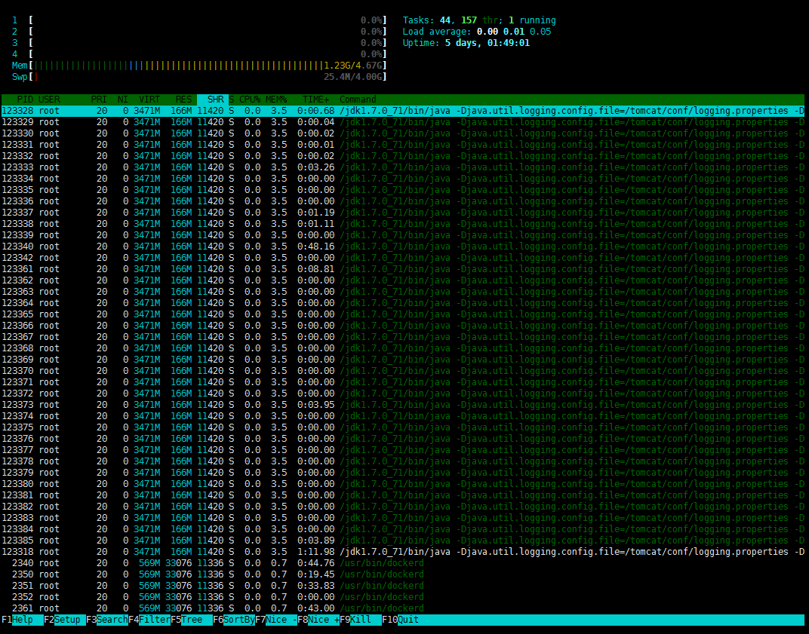
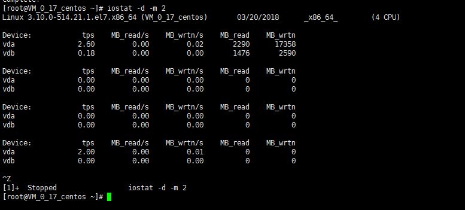
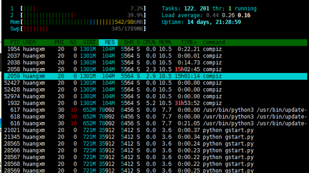
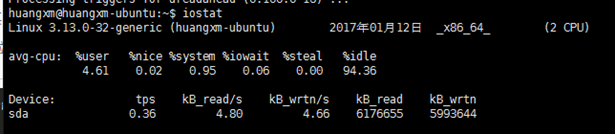
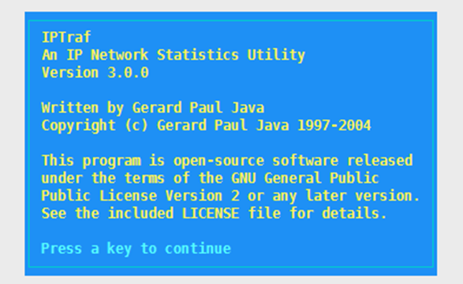

1、centos -Tab键命令补全
1 | $ yum install -y bash-completion |
2、自定义命令补全
1 | # 自定义生成kubectl命令补全 |
3、ubuntu-Tab键命令补全
编辑/etc/bash.bashrc 里面有这几行语句，去掉#注释
1 | #enable bash completion in interactive shells |
4、Linux设置环境变量
在 linux 里设置环境变量的方法 （ export PATH ）
一般来说，配置交叉编译工具链的时候需要指定编译工具的路径，此时就需要设置环境变量。例如我的mips-linux-gcc编译器在“/opt/au1200_rm /build_tools/bin”目录下，build_tools就是我的编译工具，则有如下三种方法来设置环境变量：
4.1、直接用export命令：
立即生效，重启丢失。
1 | export PATH=$PATH:/opt/au1200_rm/build_tools/bin |
查看是否已经设好，可用命令export查看：
1 | #export |
4.2、修改profile文件：
1 | $ vi /etc/profile |
4.3. 修改.bashrc文件：
1 | $ vi /root/.bashrc |
后两种方法一般需要重新注销系统才能生效，最后可以通过echo命令测试一下：
1 | $ echo $PATH #输出变量 |
5、实时查看日志
tail -f /var/log/messages
6、客户端(Xshell、SecureCRT)拖拉文件到服务器
yum install lrzsz
7、YUM下载rpm包及依赖包
#只下载bash-completion包到home目录，不进行安装
yum install –downloadonly –downloaddir=/home bash-completion
8、删除多少前天备份
#删除目录/mnt/backup_data下30天前后缀为.sql的文件
find /mnt/backup_data/ -name “*.sql” -type f -mtime +30 -exec rm -f {} \;
9、nmon显示系统性能显示工具
1 | yum install nmon |

参考https://linux.cn/article-6467-1.html
10、Htop进程浏览器
yum install htop

11、查看磁盘i/o工具
1 | $ yum install sysstat |

1 | yum install iotop |
使用详解参考：http://man.linuxde.net/iotop
12、linux常用的监控命令
12.1. top
显示所有正在运行而且处于活动状态的实时进程， 而且会定期更新显示结果；它显示了CPU使用率，内存使用率，交换内存使用大小，调整缓存使用大小，缓冲区使用大小，进程PID， 使用的命令等信息。
12.2. vmstat

1 | 一般是通过两个数字参数来完成的，第一个参数是采样时间间隔，单位是秒， 第二个参数是采样的次数 |
12.3. lsof
列出打开的文件；它常用于以列表形式显示所有打开的文件和进程，包括磁盘文件，网络套接字，管道，设备和进程。
主要情形之一就是 无法挂载磁盘和显示正在使用或者打开某个文件的错误时，查看谁正在使用。
12.4. tcpdump
apt-get install tcpdump
用于捕捉或过滤网络上指定接口上接收或者传输的TCP/IP包。
-i : 网络接口
-c ： 需要输出包数量
12.5. netstat
用于监控进出网络的包和网络接口统计的命令行工具，非常有用，用来监控网络性能，解决网络相关问题。
-h : 查看帮助
-r : 显示路由表
-i : 查看网络接口


12.6. Htop
一个非常高级的交互式实时linux进程监控工具，和top相似，但更友好, 还支持鼠标。
sudo apt-get install htop

12.7. iotop
监控linux磁盘I/O, 用于查找大量使用磁盘读写进程的时候。python版本需要2.7以上。
1 | $ apt-get install iotop |
-h: 查看帮助
12.8. iostat
查看存储设备输入和输出状态统计的工具，用来追踪存储设备的性能 问题；包括设备，磁盘，NFS远程磁盘。
sudo apt-get install sysstat

1 | %user: 在用户级别运行所使用的CPU百分比 |
12.9. iptraf
用于采集通过网络接口的IP流量信息，包括tcp标记，icmp信息，TCP，UDP信等。
1 | $ sudo apt-get install iptraf |



12.10. nethogs
监控每个进程使用的网络带宽
1 | $ sudo apt-get install nethogs |

12.11. iftop
监控网络接口的应用网络带宽使用情况
1 | $ sudo apt-get install iftop |

1 | => : 表示 流量方向 |
12.12. system monitor
监控cpu,内存，进程，硬盘的信息；分为进程监控，资源监控，文件监控; 遗憾的是需要图形界面支持。
1 | sudo apt-get install gnome-system-monitor |
13、禁止用户登录系统
1 | #禁止 |
14、nmtui配置网卡
使用nmtui命令（上一篇博客里有介绍界面）